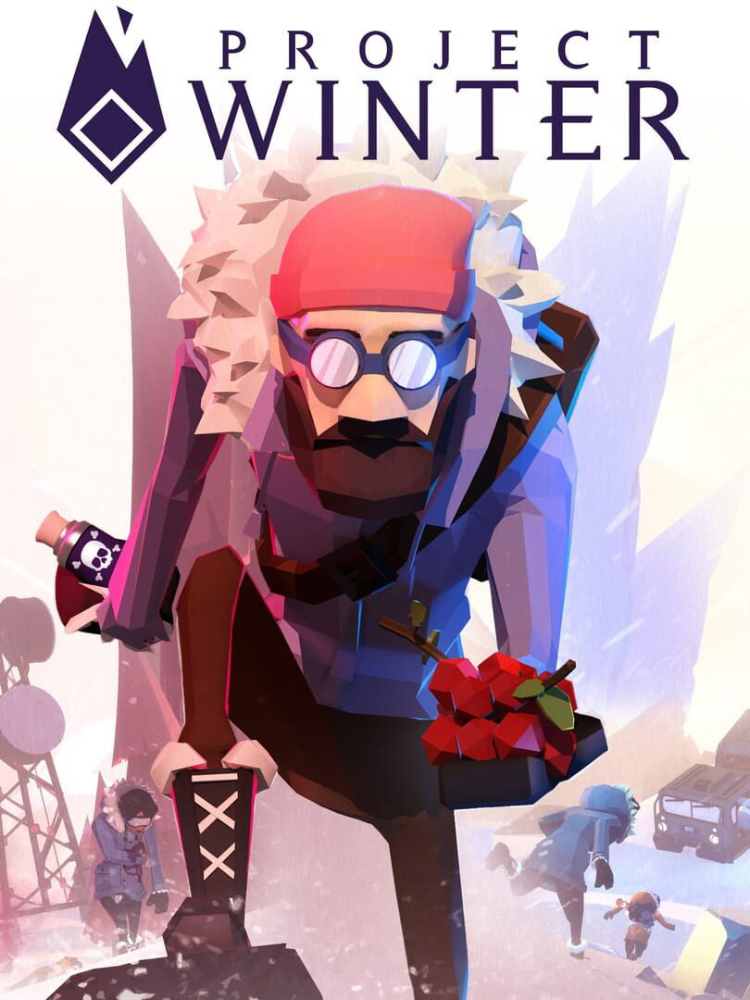

Project Winter
Project Winter
Details
|  | |
| Playtime | Not Played |
| Last Activity | Never |
| Added | 9/18/2025 11:35:45 |
| Modified | 9/18/2025 12:09:57 |
| Completion Status | Not Played |
| Library | Epic |
| Source | Epic |
| Platform | Epic Games |
| Release Date | 5/23/2019 |
| Community Score | 61 |
| Critic Score | 70 |
| User Score | |
| Genre | Action Adventure Casual Indie Strategy |
| Developer | Other Ocean Interactive |
| Publisher | Other Ocean Group |
| Feature | Co-Operative Multiplayer Single-Player |
| Links | Steam Official Website Google Play Twitch YouTube Discord Epic Playstation Nintendo |
| Tag | [GGDeals] Synced |
Description
The ultimate test of trust and betrayal: do your friends have your back or will they leave you bleeding in the snow? Project Winter is an 8-person multiplayer game of survival and social deception, where cooperation is essential, but betrayal is inevitable.
Stranded in the frozen wilderness, survivors must gather resources, repair objectives, and fight the elements to escape. But hidden among them are traitors working together to sabotage, mislead, and eliminate their so-called allies.
Project Winter 2.0: Cabin Fever introduces a faster, more streamlined experience that keeps the paranoia and chaos alive while making it easier than ever for new players to jump in. For seasoned players, the punishing Classic mode remains - demanding coordination, grit, and sharp instincts to survive.
No two matches are ever the same. Whether you’re chopping firewood with allies, whispering over secret radios as a traitor, or panicking when a sudden blizzard forces everyone together, the tension builds with every decision.
PROJECT WINTER ROLES
Survivor
As a survivor you will have to complete a series of objectives in order to call in one of several rescue vehicles and escape to win the game.
Repair all the objectives to restore the cabin radio to working order.
Break rocks, harvest berries and herbs, and cut down trees to earn crafting materials used to repair objectives, and help keep you alive.
Explore crates found in the buildings scattered throughout the map which contain items that will help you survive and complete your objectives.
Traitor
As a traitor your goal is to stop the survivors from escaping without being identified or killed.
All of your teammates will be revealed to you at the start of the match and can be identified by a red traitor symbol, much like yours. You will start with a red radio to communicate with your fellow traitor.
Use traitor crates and hatches scattered throughout the map to gain advantage against survivors.
FEATURES
Teamwork & Survival: Survivors can’t make it alone. Work together to endure the cold, complete objectives, and fend off wildlife.
Betrayal & Deception: Traitors blend in, gain trust, and then strike when the moment is right. Anyone could be the enemy!
Communication: Proximity voice, radio channels, text chat, and emotes keep every interaction charged with suspicion.
Multiple Modes: Choose between streamlined Cabin Fever, unforgiving Classic, or customize your own rules for the perfect dose of paranoia.
Cosmetics & Progression: Unlock stylish looks and personalize your character with cosmetics available in our in-game store, progression trees, or in-game drops.
Can you trust your friends long enough to survive? Or will you be the reason no one makes it out alive?